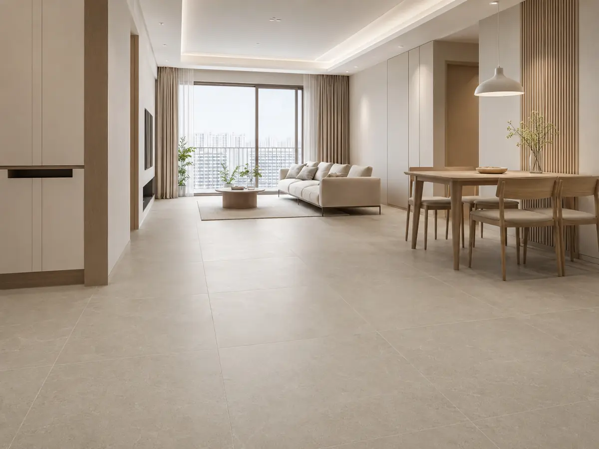

타일 가이드
타일은 물·오염에 강한 반영구 마감이지만, 성패는 재질 선택보다 ‘떡 시공 vs 본드 시공’과 줄눈 관리에서 갈립니다. 자기질·도기질·폴리싱의 차이부터 시공·하자까지 정리했습니다.
이 글에서 알 수 있는 내용
- 자기질·도기질·폴리싱·우드 타일의 흡수율·강도·사용처 차이
- 사이즈별 특징과 공간별 추천
- 떡 시공과 본드 시공의 차이, 어디에 무엇을 쓰는지
- 줄눈 폭·색상·에폭시 줄눈·코킹 관리
- 들뜸·구배 불량·방수 불량 등 하자와 확인법
욕실 바닥은 떡 시공(구배 조정에 유리)이 표준, 벽은 본드 시공(빠르고 깔끔)이 유리합니다. 바닥·현관·발코니는 흡수율 낮은 자기질(포세린), 욕실 벽은 도기질도 가능하며, 유광 폴리싱은 욕실 바닥에 부적합합니다.
재질별 비교
흡수율이 낮을수록 물·동결에 강합니다. 자기질은 바닥·외부까지, 도기질은 실내 벽 전용, 폴리싱은 광택 마감입니다.
바닥·외부 가능
벽 전용
광택 마감
나무 질감
실물 예시로 보는 차이
사진은 준비되는 대로 아래 카드에 자동으로 표시됩니다. 지금은 임시 placeholder가 보입니다.


사이즈·시공 방식
큰 타일일수록 이음이 적어 넓어 보이지만 시공 난도와 하부 평탄 요구가 올라갑니다.
| 사이즈 | 특징 | 주 사용처 |
|---|---|---|
| 200×200mm | 전통, 미끄럼방지 | 욕실 바닥(소형) |
| 300×600mm | 가장 대중적 | 욕실 벽·바닥, 현관 |
| 600×600mm | 현대적 | 거실·발코니 |
| 600×1200mm | 대형판 | 거실·현관 (광택) |
| 1000×2000mm 포세린 | 이음 적음·시공 난도↑ | 고급 거실·벽 |
← 표는 좌우로 넘겨 볼 수 있어요
떡 시공 vs 본드 시공
바닥·구배 조정
모르타르를 한 장씩 떡처럼 올려 시공. 바닥 평탄·구배 조정에 유리해 욕실 바닥은 거의 표준입니다.
시공비: ㎡당 5~7만원 안팎
벽·빠른 시공
전용 접착제를 바른 평탄면에 바로 부착. 빠르고 깔끔하지만 하부가 평탄해야 합니다.
시공비: ㎡당 3~5만원 안팎
줄눈·코킹 관리
타일 마감의 절반은 줄눈입니다. 시공 시 마감과 거주 중 관리 모두 중요합니다.
구매 전 확인할 스펙
타일은 브랜드보다 소재·등급·로트가 핵심입니다. 아래 항목이 견적서에 있어야 비교가 됩니다.
| 항목 | 기준 | 보는 법 |
|---|---|---|
| 소재 | 포세린 / 세라믹 / 폴리싱 | 바닥·현관·발코니는 흡수율 낮은 포세린, 벽은 세라믹 가능 |
| 등급 | 1급(A급) / 2급 | 2급은 휨·색편차 가능 — 견적서에 급수 명시 |
| 미끄럼 저항 | 욕실 바닥 R10~R11 | 폴리싱(유광)은 욕실 바닥에 부적합 |
| 산지 | 국산 / 유럽 / 기타 수입 | 유럽산은 디자인·평탄도 우수, 단가↑ · 재주문 리드타임 확인 |
| 사이즈·로트 | 600각 기준 · 동일 로트 | 로트가 다르면 색차 발생 — 여유분 5~10% 같은 로트로 확보 |
| 시공 방식 | 바닥 압착 · 벽 떠발이/접착 | 대형 타일(600각↑)은 레벨링 시스템 포함 여부 확인 |
| 줄눈 | 일반 백시멘트 / 에폭시 | 욕실·주방은 오염에 강한 에폭시 줄눈 고려(㎡ 추가 비용) |
← 표는 좌우로 넘겨 볼 수 있어요
자주 발생하는 하자
타일 하자는 대부분 접착 부족·구배 불량·방수 미비에서 옵니다.
- 들뜸·박리 — 떡 시공 시 모르타르 부족. 두드려 빈 소리 나면 재시공.
- 줄눈 갈라짐 — 시공 후 수축. 코킹으로 보수.
- 구배 불량 — 욕실 바닥 물 고임. 시공 하자, 재시공 사유.
- 방수 불량 — 욕실 아래층 누수. 방수 시공 단계 확인 필수.
구매처·브랜드 (중립 정리)
타일은 같은 모델도 로트별 색차가 있어 실물 샘플과 동일 로트 확보가 브랜드 선택보다 중요합니다. 아래는 구매처 유형별 특징입니다.
| 구분 | 주요 특징 | 검토 시 살펴볼 점 |
|---|---|---|
| 국산 제조(대동·삼영 등) | 수급 빠름 · 재주문 쉬움 · 표준 규격 | 공기 짧은 공사, 무난한 색·질감에 적합 |
| 유럽 수입(스페인·이탈리아) | 디자인·질감 다양, 대형 포세린 라인업 | 재주문 리드타임·여유분 확보 |
| 수입 유통 쇼룸(윤현상재·유로세라믹 등) | 실물 확인 가능 · 로트 관리 | 발품 팔아 실물 보고 결정 |
| 기타 수입 | 단가·품질 편차가 큼 | 등급·평탄도·흡수율 확인 필수 |
실물 샘플 + 동일 로트 확보가 브랜드 선택보다 체감을 좌우합니다.
최종 선택 체크리스트
자주 묻는 질문
욕실 바닥에 폴리싱 타일 써도 되나요?
권하지 않습니다. 유광 폴리싱은 물에 젖으면 미끄러워 욕실 바닥에는 부적합합니다. 욕실 바닥은 미끄럼 저항 R10~R11의 포세린을 쓰세요.
떡 시공과 본드 시공 중 뭐가 나은가요?
용도가 다릅니다. 구배(물 빠짐 경사)를 잡아야 하는 욕실 바닥은 떡 시공이 표준이고, 평탄한 벽면은 빠르고 깔끔한 본드 시공이 유리합니다.
줄눈 색은 뭐가 좋나요?
화이트는 깔끔하지만 오염이 빨리 보입니다. 라이트 그레이가 무난하며, 욕실·주방처럼 오염이 잦은 곳은 방수·곰팡이에 강한 에폭시 줄눈을 고려하세요.
같은 타일인데 색이 조금씩 달라요.
타일은 생산 로트별로 색차가 있습니다. 그래서 여유분을 포함해 동일 로트로 한 번에 확보하는 것이 원칙입니다.
출처
- KS L 1001 (도자기질 타일)
- 건축공사 표준시방서 — 타일공사
- 한국세라믹기술원 시공 가이드